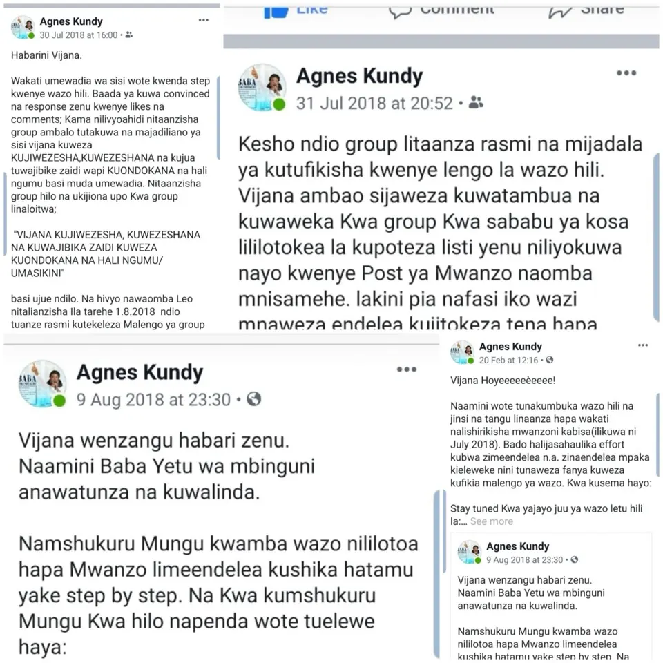
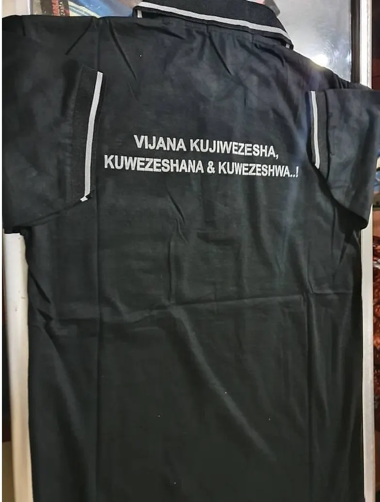

Agri-Connect Tanzania
Background of the project
Origin of the idea...
Agnes is a village girl, she is born ánd raised in the village. She happen to be an international traveller and everytime she flies back to her home country, sees the situation of young people. She happen to realize many cases which proves availability of young people hanging arround, having no perspective, no focus just complaining life is hard, no jobs etc,..Agnes decided to share her idea on her Facebook page 'Agnes Kundy' (which is now Agnes Link) as a first step. (as it can be seen right on the picture). After receiving positive responce, she decided to do more research intending to know what real is happening arround young people's lives.


Research results concluded...
Young people need to be supported more on knowledge. They also need material provision in terms of money as capital, but the situation shows material provision in terms of Money can only be a support if it is treated as the last capital. It is done after young people are equipped by practical knowledge, that builds them to the creativity ability and knowing what they like to do, what they can do and start doing them.
Research Observation (only few of them...)
In the process of supporting young people to support themselves the following has to be considered. Young people need:
-To be persuaded
- To be encouraged
- Practical knowledge to enhance their creativity in employing themselves on the opportunities around them.
-To build up ability for their self psychological awareness, in recognizing their inner strength and courage.This can help them to realize, their main capital before any other external capital (like money or machines), is their self motivation from their inner strength and courage.
-To build up a culture of working together, helping each other on entrepreneurial activities that builds them, and not just hanging around doing nothing while complaining life is hard.
-Guidance to organize themselves to be together and share life experiences they already have, they are in and those they are wishing to do.
-To be encouraged to the self-awareness that they can and believe they can
The reseach results and observations are the reasons made Agnes to come up with the idea "VIJANA KUJIWEZESHA, VIJANA KUWEZESHANA & KUWEZESHWA"y

The reseach results and observations are the reasons made Agnes to come up with the idea "VIJANA KUJIWEZESHA, VIJANA KUWEZESHANA & KUWEZESHWA"

The reseach doing, observations and results are the reasons made me to come up with the idea "VIJANA KUJIWEZESHA, VIJANA KUWEZESHANA & VIJANA KUWEZESHWA" I believe, in order to achieve the vision and mission of supporting young people to support themselves; and have a strong community with strong, responsible and independent young generation; the support should strictly go through the three stages, in three procesess.\ \ STAGES \ 1. Kijana kujiwezesha (A young person to support him/herself)\ 2. Vijana kuwezeshana (Young people to support each other)\ 3. Vijana kuwezeshwa (Young people to be supported)\ \ PROCESS\ 1. Mindset changing\ 2. Capacity building\ 3. Material provision